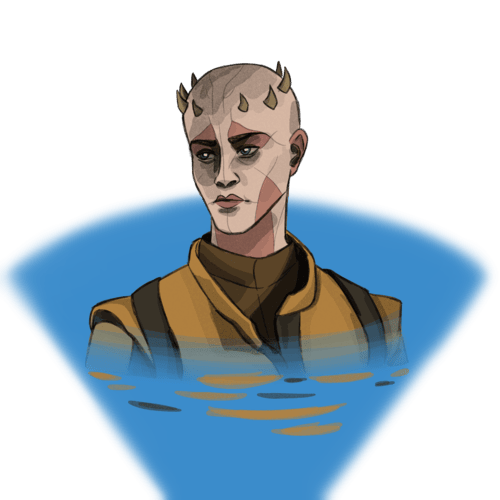

Zabrak
Zabraks are fierce and determined beings, marked by their iconic horns and vibrant tattoos that signify their individuality and cultural heritage. Known for their unyielding spirit and formidable physicality, they thrive in battle and adversity. Many Zabraks come from the rugged landscapes of Iridonia or the mystic environment of Dathomir, imbuing them with a natural resilience and an intimidating aura.
Zabrak Traits
Ability Scores
Your strength score increases by 1 and constitution score increases by 2.
Age
Zabraks live for about 120 years.
Alignment
Zabraks tend toward Chaotic alignments.
Size
Zabraks have a height of around 8ft.
Movement
Zabraks have a movement speed of 35ft.
Languages
Zabraks can speak Basic and one other language of your choice
Dathomiri Descent
You create an image within 30 feet of yourself that lasts for 1 minute.If you create an image of an object—such as a chair, muddy footprints, or a small chest—it must be no larger than a 5-foot cube. The image can't create sound, light, smell, or any other sensory effect. Physical interaction with the image reveals it to be an illusion, because things can pass through it.
Daunting Presence
Gain proficiency in intimidation